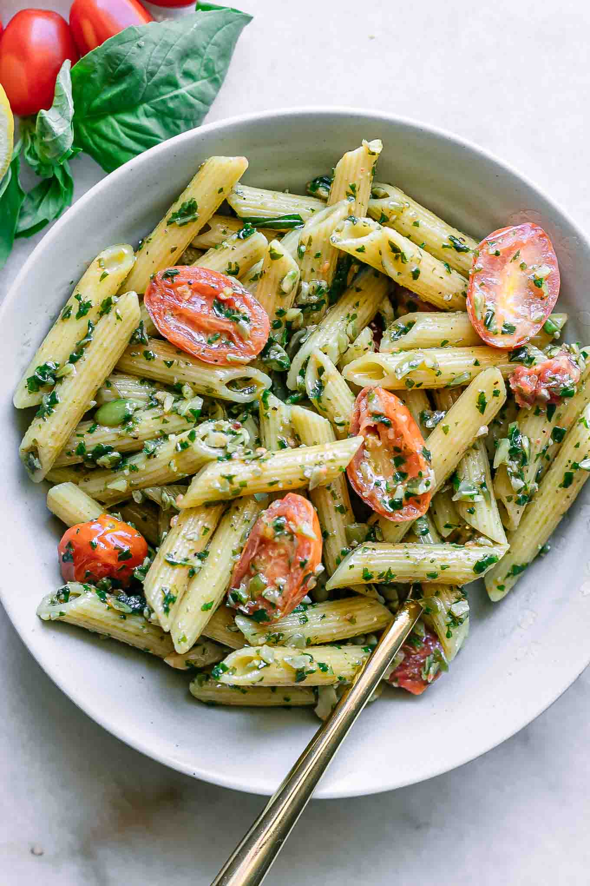

Penne Pesto
20 Min
simpel
17.06.2025
Zutaten für:
| 200 g | Penne |
| 1 TL | Salz |
| 30 g | frisches Basilikum |
| 30 g | geriebener Parmesan(n) |
| 30 g | Pinienkerne |
| 1 | Knoblauchzehe |
| 80 ml | Olivenöl (kaltgepresst) |
| Salz & Pfeffer nach Geschmack | |
| (Optional) Frisch geriebener Parmesan |
Zubereitung
Zeit 20 min
Gesamtzeit 30 min
- Penne in Salzwasser nach Packungsangabe al dente kochen.
- Währenddessen: Pinienkerne kurz anrösten, Basilikum waschen, Knoblauch schälen.
- Alle Pesto-Zutaten (Basilikum, Parmesan, Pinienkerne, Knoblauch, Olivenöl) im Mixer fein pürieren. Mit Salz & Pfeffer abschmecken.
- Penne abgießen, mit Pesto vermengen. Nach Wunsch etwas Nudelwasser für die Cremigkeit zugeben.
- Anrichten, mit Parmesan und Basilikum garnieren.